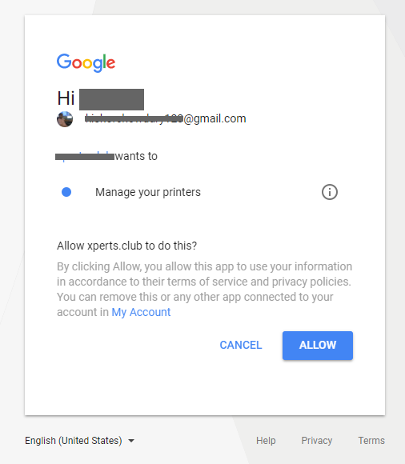

WooCommerce Google Cloud Print | Woocommerce Automatic Order Printing
Print Store Orders automatically and instantly
- created: 12/14/2017
- latest update: 10/11/2018
- by: XpertsClub
- wp.xperts.club/googlecloudprint
- email: admin@xperts.club
Installation
- Save a copy of the plugin on your computer from codecanyon
- Login to your Wordpress dashboard using an admin account
- Navigate to Plugins > Add new > Upload plugin
- Click on Choose File and browse the zipped file you've downloaded from codecanyon in first step (xc-woo-google-cloud-print.zip) and press Install now button
- Once the file is uploaded, don't forget to activate the plugin
Google Cloud Print Settings
Below you can find the steps you need to follow to setup google cloud print:
Below you can find the steps you need to follow to get Google Client ID , Google Client Secret
Visit the Google API console, and create a new project
To allow access to your Google Cloud Print printers, click on the link to your API console to take you to Google; then click on the option to create a new project in the “Project” menu: Choose “Select project” from the drop-down “Project” menu…
Click on “Create project” …
Enter “Project Name” in the Project Name Field…
Go to the Credentials to manage API credentials
Click on “Credentials” then "OAuth consent screen" then see something like the screenshot below.…
You will then probably be told that you need to give your application a name. When you have done so, it will bring you back to this screen.
Click on "Credentials" then "Create credentials" then select "OAuth client ID".. Choose “Web Application” as the application type
Next, enter some details: For the name, enter any label you please – it does not matter. When asked, paste in (as the “Authorized redirect URI”) the URL that was shown to you on your Google Cloud Print settings page back in your WordPress admin console: (do paste it from there – don’t copy any screenshot below). For the “Authorized JavaScript origins”, enter the same thing but remove everything after the initial host name in the URL. i.e. something like http://www.example.com Then press the “Create” button. You will then be shown your client ID and secret.
Go back to your WordPress dashboard, and enter the details
You should now have a client ID created. Paste the details back into the Google Cloud Print settings page in your WordPress admin console. (Don’t copy our ones from the screenshot above – they are just an example, and will not work for you!). Save the settings. Then (i.e. after saving the settings), follow the link that WordPress will show you, to complete authorization.
Google will then show you a screen to confirm the authorization. The screenshot may not be identical to the one below:

After doing this, you’re done.
Woocommerce Cloud Print Settings
Shop Details
Navigate to Woocommerce > Settings & click on "Cloud Print Options" tab
Here you can add all the settings what you needed.
Logo, Shop Name, Shop Address Will display on both Invoice and Packing Slips Header
Footer will display on both Invoice and Packing Slips Footer
Invoice Options
Enable or Disable Invoice print option
Packing Slip Options
Enable or Disable Packing Slip Printing
Print Logs
Navigate to Woocommerce > Settings & click on "Cloud Print Options" tab
Select Enable printing Logs option.
Not system will save all log information. You can check all log information in "Print log "section

Credits and Assets
Thank You
Thank you for purchasing and activating « Woocommerce Google Cloud Print » Plugin!
If you like our plugin, please rate it with 5 stars, it will help us to make regular updates and support this plugin as long as it will be in demand.
If you are not satisfied with our product, please do not rush to put a bad rating, contact us about your wishes. We can not guarantee that all of them will be implemented, but the most interesting and popular ideas will be added necessarily!